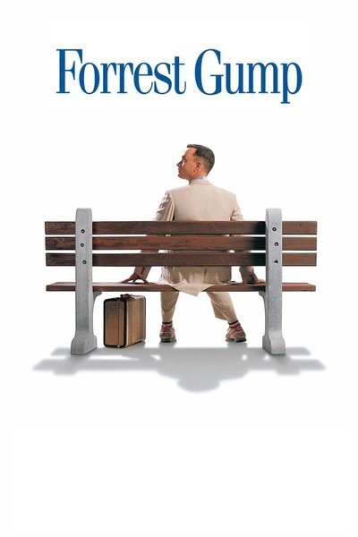

Feel Good Movies
- The Pursuit of Happyness
- Perks of being a wallflower
- Palm Springs
- Forrest grump
- The Map of tiny Perfect things
- The Terminal
- Dead poet's society
- Mrs. Doubtfire
Life is a struggle for single father Chris Gardner (Will Smith). Evicted from their apartment, he and his young son (Jaden Christopher Syre Smith) find themselves alone with no place to go. Even though Chris eventually lands a job as an intern at a prestigious brokerage firm, the position pays no money. The pair must live in shelters and endure many hardships, but Chris refuses to give in to despair as he struggles to create a better life for himself and his son.
Trailer : The Pursuit of Happyness

Socially awkward teen Charlie (Logan Lerman) is a wallflower, always watching life from the sidelines, until two charismatic students become his mentors. Free-spirited Sam (Emma Watson) and her stepbrother Patrick (Ezra Miller) help Charlie discover the joys of friendship, first love, music and more, while a teacher sparks Charlie's dreams of becoming a writer. However, as his new friends prepare to leave for college, Charlie's inner sadness threatens to shatter his newfound confidence.
Trailer : Perks of being a wallflower
Stuck in a time loop, two wedding guests develop a budding romance while living the same day over and over again. It stars Andy Samberg, Cristin Milioti, Peter Gallagher, and J. K. Simmons
Trailer : Palm Springs
The presidencies of Kennedy and Johnson, the Vietnam War, the Watergate scandal and other historical events unfold from the perspective of an Alabama man with an IQ of 75, whose only desire is to be reunited with his childhood sweetheart.
Trailer : Forrest grump

The film tells the story of quick-witted teen Mark, contentedly living the same day in an endless loop whose world is turned upside-down when he meets mysterious Margaret also stuck in the time loop. Mark and Margaret form a magnetic partnership, setting out to find all the tiny things that make that one day perfect. What follows is a love story with a fantastical twist, as the two struggle to figure out how and whether to escape their never-ending day.
Trailer : The Map of tiny Perfect things

The Terminal is a 2004 American comedy-drama film produced and directed by Steven Spielberg and starring Tom Hanks, Catherine Zeta-Jones, and Stanley Tucci. The film is about an Eastern European man who is stuck in New York's John F. Kennedy Airport terminal when he is denied entry into the United States and at the same time is unable to return to his native country because of a military coup.
Trailer : The Terminal

Dead Poets Society is a 1989 American teen drama film written by Tom Schulman, directed by Peter Weir, and starring Robin Williams. Set in 1959 at the fictional elite conservative Vermont boarding school Welton Academy, it tells the story of an English teacher who inspires his students through his teaching of poetry.
Trailer : Dead poet's society

After a bitter divorce, an actor disguises himself as a female housekeeper to spend time with his children held in custody by his former wife.It was written for the screen by Randi Mayem Singer and Leslie Dixon, based on the 1987 novel Alias Madame Doubtfire by Anne Fine. Robin Williams, who also served as a co-producer, stars with Sally Field, Pierce Brosnan, Harvey Fierstein, and Robert Prosky.
Trailer : Mrs. Doubtfire